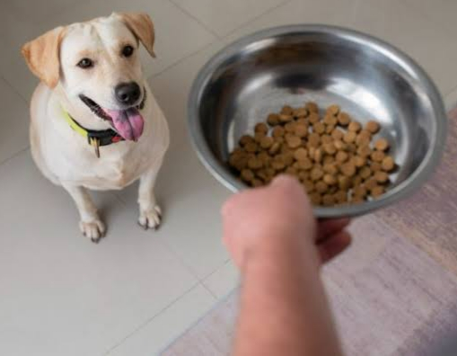
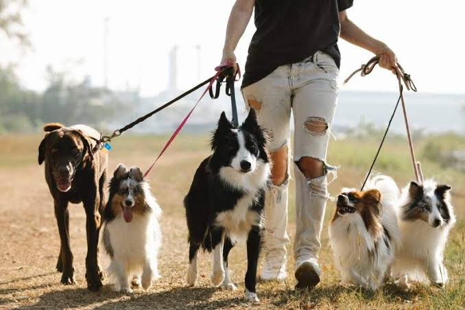
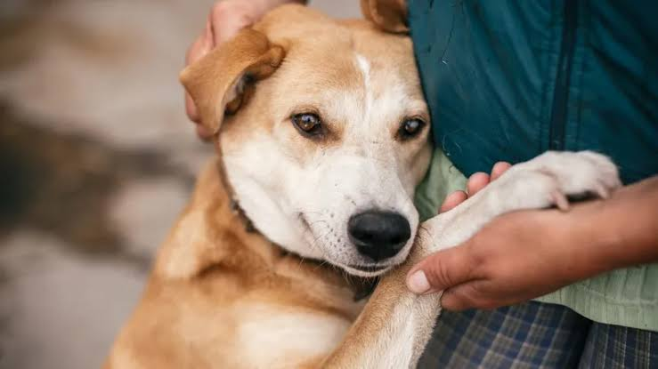
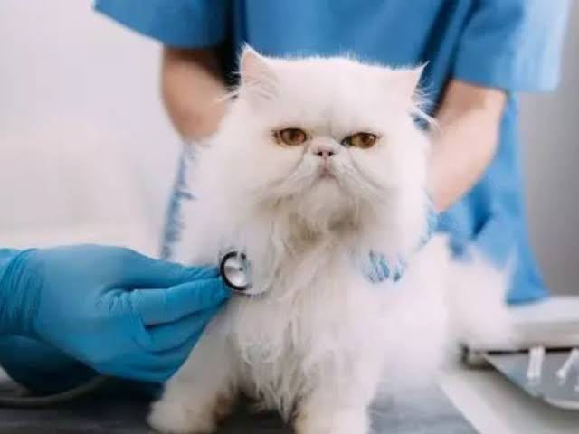

Nossos Serviços
Oferecemos diversos serviços para cuidar dos animais de estimação enquanto os donos estão ausentes.
Visitas Domiciliares
- Alimentação e troca de água;
- Higienização do espaço do pet;
- Administração de medicamentos, se necessário.
Passeios
- Caminhadas diárias;
- Brincadeiras para gastar energia;
- Socialização com outros pets, se autorizado.
Cuidados Especiais
- Banho e escovação básica;
- Atenção a pets idosos ou com necessidades especiais;
- Envio de fotos e vídeos para os tutores.
Acompanhamento em Consultas
Levamos o pet ao veterinário quando necessário.